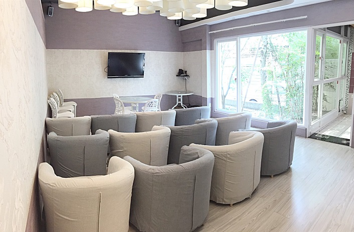

│大廳│
- 訪客可在大廳內探望媽媽及baby
- 訪客限制為兩個沒有感冒的成年人(8歲以下小孩不得入)
- 大門及電梯皆有嚴格的門禁管控，讓產婦能擁有安心且隱私的環境
- 大廳設有沙發，雜誌區、玩具區，可讓媽媽、訪客在此區休息
│嬰兒室│
- 護理人員與嬰兒照護比例為1 : 6~8
- 嬰兒室採24小時不關窗，可隨時觀看專業護理人員照顧寶寶
- 專業護理人員會教導您有關寶寶的照護、哺乳及寶寶洗澡
- 每周二會執行嬰兒室紫外線消毒，提供寶寶安心的環境
│視聽室│
- 護理長提供專業的課程(寶寶基礎照護、疫苗...等)
- 除特定課程外，爸爸可一起來參加
- 老師教導媽媽製作母乳皂
- 視聽室裡面有公共廁所，可提供訪客上廁所

│美容室│
- 由專業美容師提供美容服務
- 服務項目分入住禮及自費，媽媽可自行選擇
- 服務項目包括洗頭、胸部按摩、手肩頸按摩、全身spa...等
- 可提前預約美容項目
│瑜珈/骨盆運動教室│
- 由專業老師帶領媽媽們做運動，幫助產後媽媽恢復體態
- 提供的項目有產後瑜珈課及骨盆恢復運動
- 名額有限，請盡早預約

│茶水間│
- 提供各類茶飲讓媽媽飲用
- 星期一、五：養肝茶
- 星期二、六：產後調理茶
- 星期三、日：桂圓紅棗茶
- 星期四：消脂茶
- 星期一~日：泌乳茶
- 生理性脹奶的媽媽需減少攝取